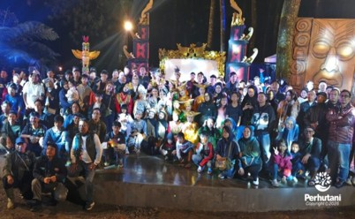

BOGOR, PERHUTANI (07/01/2026) | Perum Perhutani Kesatuan Pemangkuan Hutan (KPH) Bogor menjadi lokasi penyelenggaraan Pentas Seni SymForest yang diinisiasi oleh Kelompok Tani Hutan (KTH) Kampung Rimba dan Lembaga Masyarakat Desa Hutan (LMDH) Puncak Lestari. Kegiatan tersebut dilaksanakan pada Sabtu (03/01) di Wisata Alam Kampung Rimba, Puncak, Kabupaten Bogor.
Kegiatan ini dihadiri oleh Administratur KPH Bogor Ardhani Cahyaji, didampingi Asisten Perhutani (Asper) Bogor Tomi Wahyudi beserta jajaran, Ketua LMDH Puncak Lestari Dedi Kusnadi, Ketua KTH Kampung Rimba, serta tamu undangan dari Dinas Kebudayaan dan Pariwisata Kabupaten Bogor, Kecamatan Cisarua, dan Desa Tugu Utara.
Pada kesempatan tersebut, Administratur KPH Bogor Ardhani Cahyaji menyampaikan apresiasi atas terselenggaranya Pentas Seni SymForest oleh KTH Kampung Rimba dan LMDH Puncak Lestari yang berlangsung meriah di awal tahun 2026. Ia menilai kegiatan ini melibatkan para pemeran, penari, dan pelaku seni yang berasal dari masyarakat sekitar lokasi kerja sama wisata yang dibina oleh LMDH Puncak Lestari.
"Melalui kegiatan ini, Kampung Rimba diharapkan dapat menjadi salah satu media promosi pemanfaatan jasa lingkungan wisata alam di wilayah Perhutani, dengan menghadirkan terobosan kreatif dan inovatif. Kegiatan ini diharapkan mampu memberikan pengalaman berkesan bagi wisatawan, sekaligus menjadi daya tarik dan ikon baru Kampung Rimba serta mendukung pelestarian budaya Nusantara," jelasnya.
Sementara itu, Ketua LMDH Puncak Lestari Dedi Kusnadi menyampaikan terima kasih kepada seluruh pihak yang telah berkontribusi dalam penyelenggaraan Pentas Seni di Kampung Rimba Puncak yang bertajuk SymForest.
"SymForest merupakan inisiatif yang lahir dari keinginan untuk mengintegrasikan kesenian, budaya, dan alam secara harmonis. Kegiatan ini memiliki keunikan tersendiri dan ke depan direncanakan menjadi agenda rutin di Wisata Alam Kampung Rimba Puncak," ujar Dedi Kusnadi.
Editor: WK
Copyright © 2026 Warta Nusantara Barat